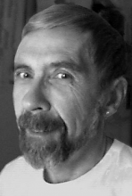

Please note: the AAS Obituaries are temporarily being hosted on this website while their full content is being ingested into the PubPub publishing platform newly adopted by the Bulletin of the American Astronomical Society. When the migration is complete, your existing links will take you to the final, migrated content. Contact peter.williams@aas.org with any questions.
Gary Lars Grasdalen (1945-2003)
With the passing of Gary Grasdalen on 30 April 2003 the astronomical community has lost one its most creative members. Born in Albert Lea, Minnesota on 7 October 1945 to the farming family of Lars G. and Lillie Grasdalen, Gary developed a strong childhood interest in science, and a particular fascination with astronomy. In 1964, he entered Harvard College intending to pursue those interests. During his freshman year, Gary enrolled in an undergraduate research seminar in which he first displayed the combination of keen insight and imagination in applying new techniques that was manifest throughout his professional career. In 1968, he published his first two papers---studies of the C 12 /C 13 ratio in metal deficient stars, and of Fe I and Fe II transition probabilities---which summarized research carried out during his junior and senior years at Harvard. Grasdalen next entered the astronomy graduate program at the University of California, Berkeley. There he developed a strong interest in the early stages of stellar evolution and, in particular, the potential of S-1 image intensifiers and newly available near-infrared detectors to detect and analyze the stellar populations embedded within their parent molecular cloud complexes.
Following award of his PhD in 1972, Grasdalen was appointed to the staff at the Kitt Peak National Observatory. Early in his career at KPNO, Gary developed tools that enabled routine near-infrared mapping of nearby molecular cloud complexes, most notably the telescope control programs that enabled precise raster scanning of these regions. Those same programs were some of the many innovations in which Gary had a hand. These innovations enabled a generation of KPNO observers in the 1970s to fully exploit the power of the newly commissioned Mayall telescope as well as the smaller telescopes on Kitt Peak.
In 1973, he published the first map of the central region of a molecular cloud, which revealed an extensive embedded, optically obscured population of newly formed stars in the Ophiuchus complex. This discovery led to a series of survey papers cataloging and describing the young stellar population associated with multiple nearby clouds. The results from these early survey papers produced finding lists and nomenclature for embedded young stars that are still referenced by researchers.
By developing the tools needed to point telescopes precisely, Grasdalen was able to follow a hunch that he had while a graduate student at Berkeley---that Herbig-Haro objects were excited by optically obscured young stars that were displaced from these emission nebulae. He believed these objects to be reflection nebulae, scattering light earthward from a young star whose powerful wind had carved out a cavity thus creating an indirect pathway for optical photons to reach observers from an otherwise invisible star. Grasdalen compiled a list of candidate H-H objects from the Palomar Observatory Sky Survey and began a near-infrared search for associated young stars, first using inefficient PbS and when they became available, InSb detectors. In 1974, his insight was rewarded with the discovery of the embedded young star associated with H-H 100 in Corona Austrina, and soon thereafter, with multiple candidate infrared sources associated with H-H objects. The 1974 discovery paper notes that the exciting source for H-H 100 is located near the geometric center of a 0.1 pc, roughly spherical cloud, providing early evidence that young stars form within regions that we now call ``molecular cores". Following several years of study, it became clear that the H-H objects themselves are in fact directly excited via stellar wind-molecular cloud interactions, thus invalidating the hypothesis that H-H objects are pure reflection nebulae. Nevertheless, Grasdalen's pioneering discovery of infrared sources associated with these objects, combined with the infrared survey results, led to a veritable explosion of infrared and molecular line studies of star-forming regions.
Grasdalen was also a major contributor to early attempts to understand the nature of intermediate mass young stars - the Herbig Ae/Be stars. His work demonstrated both their pre-main sequence nature via surface gravity measurements and that these objects share infrared properties in common with their lower mass counterparts.
Results from these studies were summarized in a review published in "Annual Reviews of Astronomy and Astrophysics" in 1975. This was an early attempt to provide a comprehensive overview of star-formation in molecular cloud complexes and to link the emerging results from mm-wave and infrared observations. Perhaps as noteworthy as the overview was his introduction of the term ``Young Stellar Object" or YSO. In part, this term was invented by Grasdalen as a reaction to the term ``QSO", which in those days (and indeed today) seemed to create an aura of mystery, seductive both to the public and the astronomical community; we star-formation types hoped that YSO would do the same for our field!
In 1978, Grasdalen left Kitt Peak for the University of Wyoming where, along with Bob Gehrz and John Hackwell, he made the Mt. Jelm 2.1-meter telescope a world-leading facility for infrared studies. His research interests evolved to include, in addition to YSO research, infrared spectroscopic study of novae, a field that he, Gehrz and Hackwell pioneered and which Bob Gehrz has carried forward, creating an impressive and important oeuvre. Grasdalen was a mentor to a generation of graduates from the University of Wyoming including Kathleen deGioia-Eastwood, Matthew Greenhouse, Karl Klett, Gregory Sloan, Jill Price, Michael Castelaz, Craig Gullixson and Thomas Hayward. To a person, they spoke to the high standards he set, his constant expectation of excellence and critical thinking, the amazing range and depth of his knowledge, and his incredibly creative mind.
Following important and influential service on the Optical-Infrared panel for the 1990 decadal survey, Gary left the University of Wyoming and, for awhile (and much to our collective loss), astronomy. Gary was a very private and, in many ways, a wary person. His decision may have been linked to a need for a break from a lifetime of pressure. In the early 1980s, Gary acknowledged that he was gay, a fact which for years he carefully hid from his friends and colleagues. While he found much support at the University of Wyoming (and elsewhere), both subtle and rampant homophobia had to have an affect on someone who was both unusually sensitive and filled with self-doubt. With increasing frequency, whatever Gary may have felt deep within led to bouts of self-destructive behavior. At least it seemed that way to his friends and colleagues; to him, it may have been release. A sad consequence was his contracting AIDS.
During the 1990s, Gary ran a non-alcoholic bar in Denver, and according to some, was at relative peace. Apparently, his love for astronomy was still deeply felt and he ultimately returned to work during his last years at the Jet Propulsion Laboratory's Table Mountain Observatory. There, he once again brought his expertise in telescope control systems to bear to upgrade the observatory and enable tracking of rapidly moving objects. He continued to work at Table Mountain until a few weeks before passing away from complications associated with AIDS.
We will miss his acid, sometimes black humor, his enjoyment of a stimulating argument, his seemingly off-the-wall, but always, in retrospect incredibly insightful comments. He accomplished much and, perhaps had he found peace and acceptance earlier, could have accomplished so much more.
His two sisters, Lavon Engen of Naples, Florida and Janet Stallerin of Albert Lean, Minnesota, survive Gary.
Obituary written by: Stephen E. Strom (National Optical Astronomy Observatory)
BAAS Citation: BAAS, 2003, 35, 1461
SAO/NASA ADS Bibcode: 2003BAAS...35.1461S